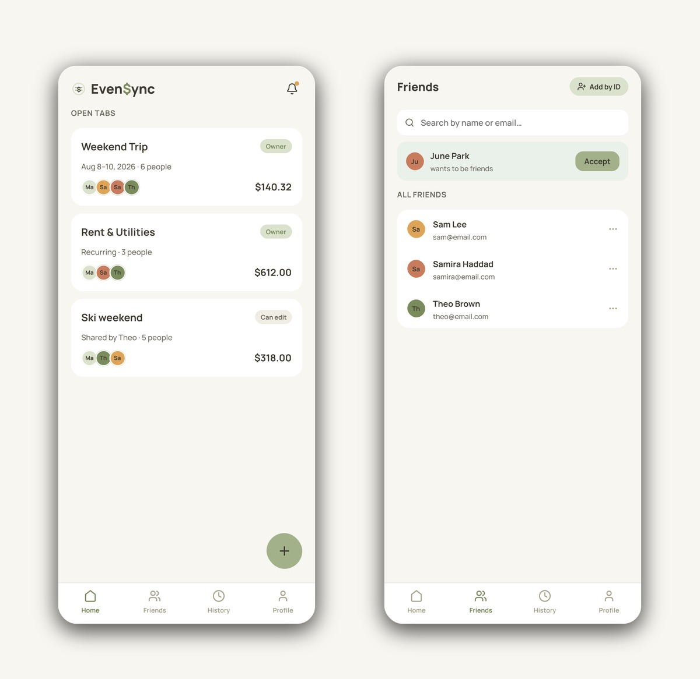
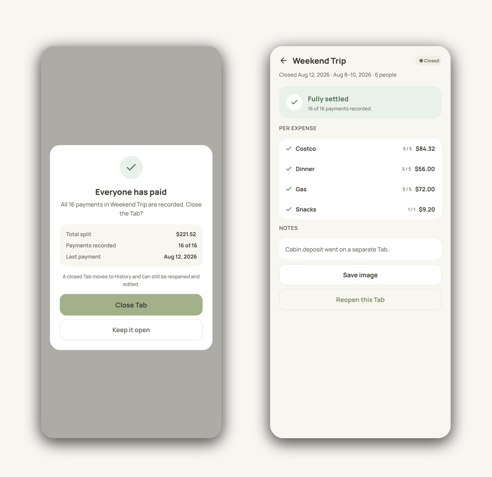

Even$ync
Even$ync is a mobile app for tracking and settling shared expenses. I designed the UX/UI, including the full user flow across close to 70 screens, and worked with developer Jasmine on what the app needed to do. It's a personal project, currently in development.
I designed every flow in the app, screen by screen, in the order someone would actually move through it: from first launch through creating a Tab, splitting a bill, and settling up.

From there it opens into Home, open Tabs at a glance, and Friends, where people are added once instead of per Tab.

What Even$ync needed to do came out of conversations with Jasmine; how it works on screen was mine to design. Before drawing any screens, I set a few rules that shaped everything after:
Item-level splitting: each item on a bill can use its own split method.
Guest participants: people can be added to a Tab without creating an account.
Owner-approved joining: joining a Tab changes everyone's shares, so it needs approval.
Different items on the same bill often need different ways to split them. Even$ync supports three methods per item:
Percent: splits by percentage, with a running total until it reaches 100%.
Exact: requires the full amount to be assigned before saving.

Even$ync keeps the original expense record unchanged and tracks payments separately. Each person who owes the payer shows up as a payment row, and the row gets checked off once they've actually paid.

Once every payment is recorded, the app offers to close the Tab. A closed Tab still shows up in History and can be reopened.

Tabs can include registered users and guests who don't have an account. Sharing happens through a link, and matching a guest to a real account needs owner approval.

Users can export their balance as an image to share outside the app, in three layouts depending on how much detail they want to include.

I built a design system to keep close to 70 screens consistent:

I also put together reference sheets for error and empty states, and every component in its build states, for the developers to check against. Screens also carry (TBD) notes in a different color, flagging things for engineering to watch for or decide on their own. They're annotations for the file, not part of the actual app.

Design is done. Jasmine and Guo are now building the backend based on my design, and I'm staying involved to help resolve open questions as they come up.
Designing close to 70 screens meant thinking past the finished state of each one: what shows up before anything is selected, what needs to happen so it doesn't break, and what should take priority when a few things go wrong at once. Small calls, like how leftover cents get rounded or what happens when someone reopens a closed Tab, ended up shaping a lot of the screens around them. I worked closely with Jasmine and Guo throughout, checking in on layouts together and flagging anything that still needed a decision before they built it. It's a personal project and still in development, but going through it start to finish gave me a clearer sense of how a design actually holds up once real edge cases show up.